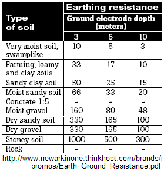

SWER Test
SWER Test
SWER Test
SWER Test
Single Wire - Earth Return Power Distribution. This page describes my first high voltage SWER test. The topic has evolved over the years (at lower voltage) to include a safe method for using solar panels at camp over hundreds of feet at lower safe voltages.
PETA Clause: No earthworms were harmed in this experiment ;-)
Test Setup: We found a rural road, stuck a broom handle out the window and let a 3200 foot roll of #20 wire fly from a small 6" spool. We cut a normal 8' copper clad steel ground rod into three pieces and drove them into the ground about 4 feet apart. That was one end. (not shown).
Then at the other end (the hiking end) we used four very small 2 foot rods 3/16ths inch) spaced about 3 feet apart that you can see in the image to the right. The path length was about .45 mile or 2500 feet between ground rods (though I had 3200 feet of wire but just ran out of straight road). The wire resistance was about 35 Ohms. To simplify the test so that we did not have to be at both ends at once, we simply grounded the distant end of the wire to the original 3 copper-clad rods, and did both the source and load at the same end shown here (with son AJ, WA4APR holding wire).
Using only 214 VDC input (conveniently from the Prius),we got a 100W light to normal brilliance (measured 115 volts across it) meaning there was 100 volts loss in the ground loop system. This implied a 100 Ohm loop system (32 ohms was in my wire). So we achieved about 65 Ohms ground system with my little rods. Doubling the depth of the rods or the number of rods would halve the resistance.
Performance of 4 rods yielded 114 volts to bulb
Performance of 3 rods dropped voltage to 108
Performance of 2 rods dropped voltage to 82
Performance of 1 rod dropped voltage to 47.
The 100 Watt bulb of course is very non-linear, so I will have to bench test it to find out what the currents were drawing at the other 3 test points. But because of the spacing of the rods being farther than the depth of the rods, the resistance should have been relatively independent yielding a linear response to the number of rods.

GROUND RODS: Since conventional SWER Power systems deliver
hundreds of Kw using grounds
as simple as 30 foot single rods or more as needed. A 10 ohm ground
resistance is ideal in moist soil as shown to the right.
Halving the depth of a rod increases the resistance
by probably a factor of 2.5. Doubling the number of rods reduces the
resistance by a factor of 2 as long as they are as far apart as deep.
Our small system goal is about 50-100 Ohms so we can go with a single 8 foot
rod or two 4 foot rods, or four 2 foot rods. I prefer the shorter rods
because they are easy to remove.
I'd say our test soil is "farming, loamy and clay" and so a 3 meter rod (10 feet) would give us about 33 ohms. But we used only four 2 foot rods, (equivalent to about a single 5 foot rod maybe and so we got double this or about 66 ohms over the 2000 feet of earth which seems consistent with the table..
Conclusion: This test was entirely satisfactory. Especially since in practice, we will not use the Prius battery, but will use a 150 watt 115 VAC inverter from the vehicle 12v system so that we have complete isolation of the SWER loop from the vehicle. We will use 2 caps and 2 diodes to double that to 330 VDC which will further reduce the loss in the loop resistance. In any case, we will have more than enough power to power a 50 Watt station on the mountain top.
See the APRS-SWER web page.
SWER systems can be done just as safely as other power distribution systems if done correctly. They can also be done dangerously by those not fully understanding the principles involved. Do not try this at home!
Bob, WB4APR